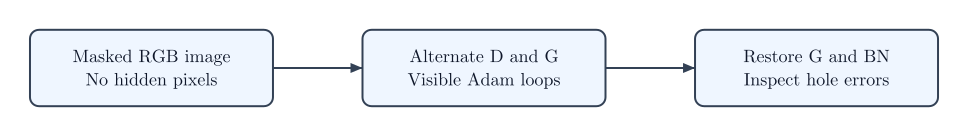
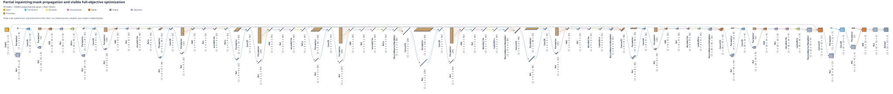
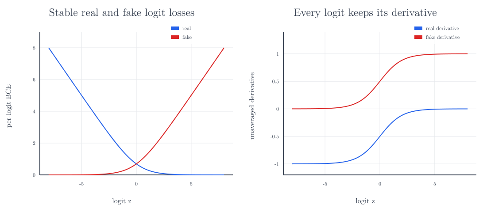
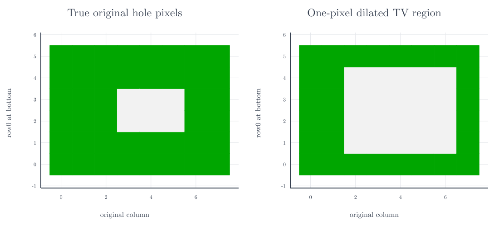
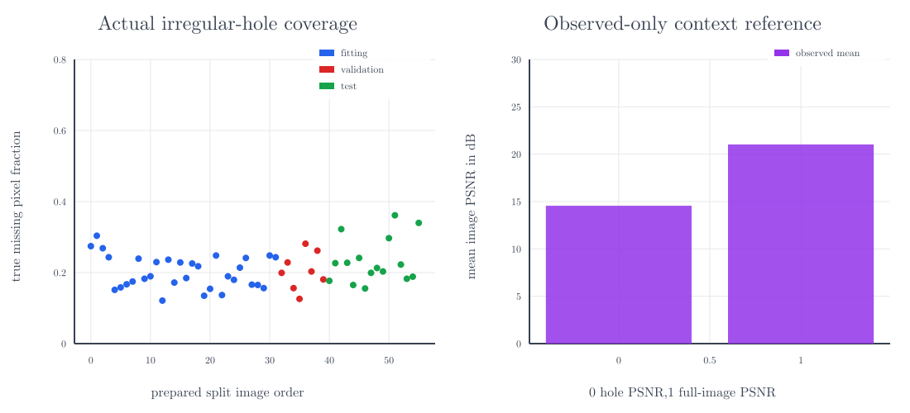
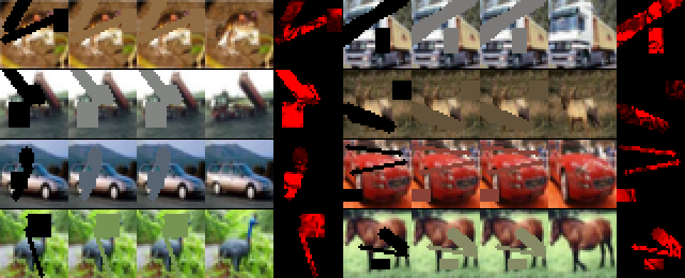
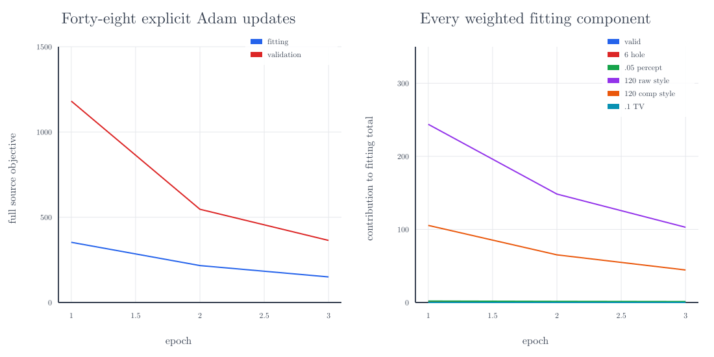
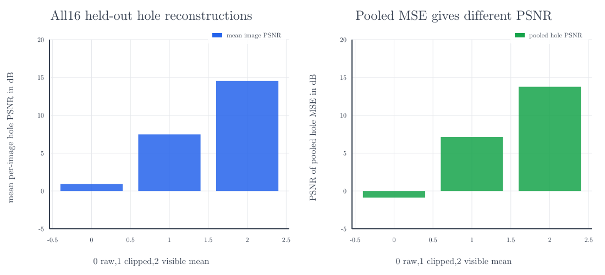
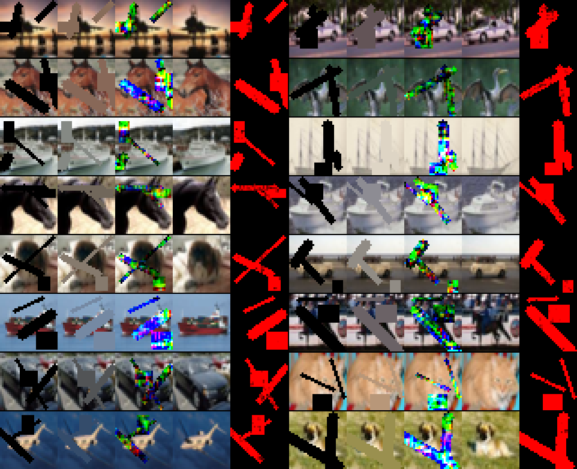

Partial inpainting:mask propagation and visible full-objective optimization
Abstract
Generate source-identical irregular CIFAR masks with tensor geometry,then explain partial-convolution renormalization,mask propagation and dilated-hole L1 TV. Run full/compact U-Nets,genuine frozen VGG16 feature losses and every one of48 Adam updates. Restore an image+mask-only predictor with immutable learned/BN values and compare all16 held-out reconstructions against the observed-only mean reference.
Source example: examples/cpp/source/nn/1_convolutional_neural_networks/1.8_other_vision_tasks/partial_inpainting.cpp.
The method
Original observed RGB and validity are the only forward inputs. Every partial convolution masks,renormalizes and propagates support;both features and masks travel through U-Net skips. The report explicitly owns the complete pixel/perceptual/style/TV objective,optimizer and paired validation checkpoint. Tensor mask geometry,independent native/Keras derivatives and actual image/error previews make the short experiment reproducible.
The concept diagram below is drawn by dm::graphics::Diagram. Its editable C++
source is the complete block below; regeneration uses the same datamunge toolchain
as the numerical examples. Exports consume the saved local SVG.
#include <dm/dm.hpp>
int main() {
std::filesystem::create_directories("build");
dm::graphics::Diagram diagram;
diagram.node("n0", {0.0, 0}, "Observed RGB and mask\nPropagate valid support");
diagram.node("n1", {5.2, 0}, "Full source objective\nVisible tensor Adam");
diagram.node("n2", {10.4, 0}, "Restore input-only net\nInspect actual holes");
diagram.edge("n0", "n1").edge("n1", "n2");
diagram.save_svg("build/partial_inpainting_concept.svg");
}
Executed tensor architecture
This figure executes the inference configuration shown in the code, using a zero-valued shape probe without fitting or loading a checkpoint. Named stage boundaries group whole subgraphs where available; other nodes retain functional-layer detail. Exact batch-inclusive shapes and reachable parameter totals come from the trace. Shared linear scales map spatial dimensions and channel counts to blocks; the one-pixel visibility floor is disclosed in the legend. Labels use compact monospace text, rotate counterclockwise and sit beside their own glyphs. Arrows flow left to right; wide diagrams scroll at native size on the website.
#include <dm/dm.hpp>
int main() {
namespace n = dm::nn;
namespace m = n::models;
n::set_num_threads(2);
std::filesystem::create_directories("build");
n::ParameterStore p(83), state(84);
const auto config = m::PartialConfig::Compact();
n::Module architecture_model(
[&](const n::Tensor& image) {
return m::PartialUNet(p, state, image, n::ones({1, 32, 32, 3}), config).image;
},
"Partial inpainting:mask propagation and visible full-objective optimization");
n::ModelPlotOptions options;
options.style = n::ModelPlotStyle::Flow;
options.detail = n::ModelPlotDetail::Blocks;
options.labels = {.type = n::ModelPlotLabel::NameAndShape, .size = 12, .wrap = 24};
options.spacing = {.layer = 24, .lane = 12, .label = 8, .margin = 20};
options.sizing.spatial_size = 96;
options.sizing.channel_size = 42;
options.sizing.minimum_extent = 1;
options.opacity = .8;
const auto diagram = architecture_model.plot(n::zeros({1, 32, 32, 3}), options);
diagram.save_svg("build/partial_inpainting_architecture.svg");
std::print(
"{} displayed nodes; {} reachable learned values.\n",
diagram.nodes().size(),
diagram.parameter_count());
}99 displayed nodes; 183684 reachable learned values.

Mask,renormalize and update support at every convolution
A partial convolution multiplies features by a detached multichannel mask, convolves the masked values,and rescales by kernel_area*Cin/valid_count. Add bias only where valid_count>0;an entirely unsupported window returns0 and mask0. TensorFlow SAME stride alignment is explicit in this source. Masks are computational support,not probabilities or learned targets. The signed fixture exposes counts,renormalized values and input derivatives.
#include <dm/dm.hpp>
int main() {
namespace n = dm::nn;
namespace m = n::models;
const auto x = n::arange(-12, 13).reshape({1, 5, 5, 1}).requires_grad_(),
axis = n::arange(0, 5), yy = axis.reshape({1, 5, 1, 1}),
xx = axis.reshape({1, 1, 5, 1}),
mask = n::logical_not(
n::logical_and(n::greater_equal(yy, 1.), n::greater_equal(xx, 1.)))
.to(n::DType::Float32);
const auto result =
m::PartialConv(x, mask, n::ones({3, 3, 1, 1}), n::full({1}, 2.), 1, 1, 3);
const auto g = n::grad(n::sum(result.value), {x})[0];
std::print("Entirely unsupported windows:{};masked input derivatives max {:.3g};every "
"derivative finite:{}\n",
n::count_nonzero(n::equal(result.mask, 0.)).item<std::int64_t>(),
n::max(n::abs(g) * (1. - mask)).item(), n::all(n::is_finite(g)).item<bool>());
auto a = n::plot_tensor_map(n::reverse(result.count.reshape({5, 5}), {0}), 0, 9),
b = n::plot_tensor_map(n::reverse(result.value.reshape({5, 5}), {0}), -110, 10);
a.title("True multichannel support count")
.x_label("output column")
.y_label("output row0 at bottom");
b.title("Renormalized signed output")
.x_label("output column")
.y_label("output row0 at bottom");
auto layout = dm::graphics::RLayout::create(1, 2);
layout.add(a).add(b).size(1100, 500).fit_panels().save_svg(
"build/partial_inpainting_renormalize.svg");
}Entirely unsupported windows:9;masked input derivatives max 0;every derivative finite:true

Propagating masks makes new computational support explicit
Each supported output becomes mask1 for the next layer,so support can expand into a hole. It does not turn those locations into measured pixels: the propagated features remain model computations. A U-Net nearest-upsamples and concatenates both feature and mask skips. The final skip includes the original observed RGB and mask. This fixture follows a25-pixel hole through three genuine partial convolutions with fixed weights.
#include <dm/dm.hpp>
int main() {
namespace n = dm::nn;
namespace m = n::models;
const auto axis = n::arange(0, 9), yy = axis.reshape({1, 9, 1, 1}),
xx = axis.reshape({1, 1, 9, 1}),
hole = n::logical_and(n::logical_and(n::greater_equal(yy, 2.), n::less(yy, 7.)),
n::logical_and(n::greater_equal(xx, 2.), n::less(xx, 7.)));
const auto original = n::logical_not(hole).to(n::DType::Float32);
auto mask = original, image = n::ones({1, 9, 9, 1});
std::print("Unsupported pixels:{}",
n::count_nonzero(n::equal(mask, 0.)).item<std::int64_t>());
for (int stage = 1; stage <= 3; ++stage) {
const auto out =
m::PartialConv(image, mask, n::ones({3, 3, 1, 1}), n::zeros({1}), 1, 1, 3);
image = out.value;
mask = out.mask;
std::print(" ->{}", n::count_nonzero(n::equal(mask, 0.)).item<std::int64_t>());
}
std::print(". New support is computed,not new sensor truth.\n");
auto a = n::plot_tensor_map(n::reverse(original.reshape({9, 9}), {0}), 0, 1),
b = n::plot_tensor_map(n::reverse(mask.reshape({9, 9}), {0}), 0, 1);
a.title("Original observed support").x_label("source column").y_label("row0 at bottom");
b.title("After three masked convolutions")
.x_label("source column")
.y_label("row0 at bottom");
auto layout = dm::graphics::RLayout::create(1, 2);
layout.add(a).add(b).size(1100, 500).fit_panels().save_svg(
"build/partial_inpainting_support.svg");
}Unsupported pixels:25 ->9 ->1 ->0. New support is computed,not new sensor truth.

Full-image pixel losses and dilated-hole total variation
The complete objective is valid+6*hole+.05*perceptual+ 120*(style_raw+style_composite)+.1*TV. Valid/hole pixel L1 losses divide by the full RGB image size,not their own support counts. Perceptual L1 compares raw and observed-preserving composites with truth at VGG16 pool1/2/3. Style uses channel/spatial-normalized Grams and L1 distances.
Genuine Keras VGG uses centered BGR255;this source then divides pooled activations by255. These feature units are explicit and are not a claim of pretrained Torch parity. TV is L1 over neighbors whose both endpoints lie in a one-pixel-dilated hole,divided by full image size. The fixture shows original versus dilated hole support and the actual raw-image adjoints.
#include <dm/dm.hpp>
int main() {
namespace n = dm::nn;
namespace m = n::models;
const auto yy = n::arange(0, 6).reshape({1, 6, 1, 1}),
xx = n::arange(0, 8).reshape({1, 1, 8, 1}),
hole = n::logical_and(n::logical_and(n::greater_equal(yy, 2.), n::less(yy, 4.)),
n::logical_and(n::greater_equal(xx, 3.), n::less(xx, 6.)));
const auto mask = n::ones({1, 6, 8, 3}) * n::logical_not(hole).to(n::DType::Float32),
truth = n::full({1, 6, 8, 3}, .4),
raw = n::full({1, 6, 8, 3}, .8).requires_grad_(),
comp = m::PartialComposite(truth, raw, mask),
region = n::max_pool2d(1. - mask, 3, 1, n::Padding::Same),
tv = m::PartialTV(comp, mask), g = n::grad(tv, {raw})[0];
std::print("Full-image valid/hole L1 {:.6f}/{:.6f};hole-region TV {:.6f};known raw adjoints "
"max {:.3g}.\n",
n::mean(mask * n::abs(raw - truth)).item(),
n::mean((1. - mask) * n::abs(raw - truth)).item(), tv.item(),
n::max(n::abs(g) * mask).item());
auto a = n::plot_tensor_map(n::reverse(hole.to(n::DType::Float32).reshape({6, 8}), {0}), 0,
1),
b = n::plot_tensor_map(n::reverse(n::select(n::select(region, 0, 0), 2, 0), {0}), 0, 1);
a.title("True original hole pixels").x_label("original column").y_label("row0 at bottom");
b.title("One-pixel dilated TV region").x_label("original column").y_label("row0 at bottom");
auto layout = dm::graphics::RLayout::create(1, 2);
layout.add(a).add(b).size(1100, 500).fit_panels().save_svg(
"build/partial_inpainting_tv.svg");
}Full-image valid/hole L1 0.350000/0.050000;hole-region TV 0.083333;known raw adjoints max 0.

Complete full and compact mask-propagating graphs
Full has8 encoders/8 decoders,width64..512,32,865,236 learned values in60 tensors and10,880 BN values. Compact retains5 encoders/5 decoders,width 8/16/32/64/64,183,684 learned values in36 tensors and592 BN values. Encoder kernels7/5/5/3... use stride2/ReLU. Nearest decoders concatenate both feature and mask skips;BN and LeakyReLU.2 apply except at final linear RGB. BN is absent from the first encoder. Predictions remain raw/unbounded. Native tests execute full256px backward and every odd-rectangle compact feature/mask stage,all learned gradients,and empty/all-known identities.
#include <dm/dm.hpp>
int main() {
namespace n = dm::nn;
namespace m = n::models;
n::set_num_threads(2);
std::print("| graph | learned values | leaves | BN values | BN leaves | stages "
"|\n|---|---:|---:|---:|---:|---:|\n");
for (bool compact : {false, true}) {
const auto config = compact ? m::PartialConfig::Compact() : m::PartialConfig{};
const int side = compact ? 33 : 256, width = compact ? 35 : 256;
n::ParameterStore p(83), state(84);
n::NoGradGuard guard;
const auto out = m::PartialUNet(p, state, n::full({1, side, width, 3}, .4),
n::ones({1, side, width, 3}), config);
std::print("| {} | {} | {} | {} | {} | {} |\n", compact ? "compact" : "full", p.count(),
p.size(), state.count(), state.size(), out.stages.size());
if (!n::all(n::is_finite(out.image)).item<bool>())
return 1;
if (compact) {
std::print("\nCompact execution stages.\n\n| compact stage | H | W | C | binary mask "
"|\n|---:|---:|---:|---:|---|\n");
for (std::size_t i = 0; i < out.stages.size(); ++i)
std::print(
"| {} | {} | {} | {} | {} |\n", i + 1, out.stages[i].size(1),
out.stages[i].size(2), out.stages[i].size(3),
n::all(n::logical_or(n::equal(out.masks[i], 0.), n::equal(out.masks[i], 1.)))
.item<bool>());
}
}
}| graph | learned values | leaves | BN values | BN leaves | stages |
|---|---|---|---|---|---|
| full | 32865236 | 60 | 10880 | 28 | 16 |
| compact | 183684 | 36 | 592 | 16 | 10 |
Compact execution stages.
| compact stage | H | W | C | binary mask |
|---|---|---|---|---|
| 1 | 17 | 18 | 8 | true |
| 2 | 9 | 9 | 16 | true |
| 3 | 5 | 5 | 32 | true |
| 4 | 3 | 3 | 64 | true |
| 5 | 2 | 2 | 64 | true |
| 6 | 3 | 3 | 64 | true |
| 7 | 5 | 5 | 32 | true |
| 8 | 9 | 9 | 16 | true |
| 9 | 17 | 18 | 8 | true |
| 10 | 33 | 35 | 3 | true |
Actual CIFAR images with reproducible tensor irregular masks
Fitting uses original training rows0..31,validation32..39,and test uses original test rows192..207. Mask seeds107/109/113 keep splits distinct. For each source row,MT19937(seed+65537*row) draws one rectangle and two swept-disk stroke geometries. Tensor coordinates compute every pixel’s membership,union and coverage;retry until123..563 of1024 pixels are holes. No host pixel loops or image values determine mask geometry. Reordering source rows reproduces their masks exactly. Native literal original geometry oracles compare every mask pixel across multiple seeds and row orders.
The reference preserves known pixels and fills holes with that image’s observed mean RGB. It is a deterministic statistic of the current observation, not a model fitted on training labels. All sums/counts use tensors and ignore hidden values before aggregation;the true unobserved RGB never enters it. Genuine VGG16 weights and independent Keras pool/loss/gradient fixtures reuse dm::datasets::prepare_example_data("style") and the shared pinned style asset cache.
#include <dm/dm.hpp>
int main() {
namespace n = dm::nn;
namespace m = n::models;
n::set_num_threads(2);
std::filesystem::path cache;
if (const auto *p = std::getenv("DATAMUNGE_DATA_DIR"))
cache = p;
else if (const auto *p = std::getenv("XDG_CACHE_HOME"))
cache = std::filesystem::path(p) / "datamunge/datasets";
else
cache = std::filesystem::path(std::getenv("HOME")) / ".cache/datamunge/datasets";
dm::datasets::fetch("cifar10", (cache / "cifar10").string());
std::filesystem::path assets = cache / "style_transfer";
if (const auto *p = std::getenv("DATAMUNGE_STYLE_DIR"))
assets = p;
else
dm::datasets::prepare_example_data("style", assets.string());
const auto original_train =
n::data::LoadCifar({cache / "cifar10/data_batch_1.bin"}, n::data::Cifar::k10),
original_test =
n::data::LoadCifar({cache / "cifar10/test_batch.bin"}, n::data::Cifar::k10);
std::vector<std::size_t> fit_rows, val_rows, test_rows;
for (int i = 0; i < 32; ++i)
fit_rows.push_back(i);
for (int i = 32; i < 40; ++i)
val_rows.push_back(i);
for (int i = 192; i < 208; ++i)
test_rows.push_back(i);
const auto fitting = m::PartialPairs(original_train.images, fit_rows, 107),
validation = m::PartialPairs(original_train.images, val_rows, 109),
testing = m::PartialPairs(original_test.images, test_rows, 113);
std::filesystem::create_directories("figures");
const auto first = m::PartialBatch(fitting, {0, 1, 2, 3, 4, 5, 6, 7});
const auto mean = m::PartialMean(first);
n::save_image_grid(m::PartialPreviewTiles(first, mean, mean),
"build/partial_inpainting_inputs.png", 2, 0, 1, 2, 0, 3);
auto a = dm::graphics::RPlot::create(), b = dm::graphics::RPlot::create();
const std::vector<std::pair<std::string, m::PartialData>> data = {
{"fitting", fitting}, {"validation", validation}, {"test", testing}};
const std::array<dm::graphics::RGB, 3> colors = {
{{37, 99, 235}, {220, 38, 38}, {22, 163, 74}}};
int offset = 0, index = 0;
std::print("| split | original images | mean hole fraction |\n|---|---:|---:|\n");
for (const auto &item : data) {
const auto fraction = n::mean(1. - item.second.mask.to(n::DType::Float64), {1, 2, 3});
a.points(n::arange(offset, offset + fraction.numel()).to_vector<double>(),
fraction.to_vector<double>(), item.first, colors[index++]);
offset += fraction.numel();
std::print("| {} | {} | {:.6f} |\n", item.first, fraction.numel(),
n::mean(fraction).item());
}
a.title("Actual irregular-hole coverage")
.x_label("prepared split image order")
.y_label("true missing pixel fraction")
.y_limits(0, .8);
const auto baseline = m::PartialMean(testing);
const auto score = m::ScoreTensorPartial(testing, baseline);
b.bars({0., 1.}, {score.hole_psnr.item(), score.full_psnr.item()}, "observed mean",
{147, 51, 234})
.title("Observed-only context reference")
.x_label("0 hole PSNR,1 full-image PSNR")
.y_label("mean image PSNR in dB")
.y_limits(0, 30);
auto layout = dm::graphics::RLayout::create(1, 2);
layout.add(a).add(b).size(1100, 500).fit_panels().save_svg(
"build/partial_inpainting_data.svg");
std::print("All16 test reference hole MSE {:.6f},mean hole/full PSNR {:.6f}/{:.6f}dB. No "
"hidden truth used by reference.\n",
score.hole_mse.item(), score.hole_psnr.item(), score.full_psnr.item());
}| split | original images | mean hole fraction |
|---|---|---|
| fitting | 32 | 0.201385 |
| validation | 8 | 0.204590 |
| test | 16 | 0.232605 |
All16 test reference hole MSE 0.041966,mean hole/full PSNR 14.555607/21.030384dB. No hidden truth used by reference.


Every full-objective Adam update is visible
Warm all36 learned and16 BN tensors before Adam(.0002). Cache three truth VGG pool targets with no graph. Each update computes raw U-Net RGB, observed-preserving composite,raw/composite frozen VGG features,and all seven objective components. Train all32 images in16 two-image batches per epoch, three epochs/48 updates. BN updates only during training. Validation uses moving statistics and the same complete objective. Save parameters and BN state together as two files for the same selected epoch.
A separate restored predictor receives masked RGB and validity only. It contains no VGG,truth or optimizer. Test checkpoint parity,repeatability, immutable learned/BN values,single/batch agreement and independence from arbitrary finite hidden fill. Composite output preserves every known RGB exactly. Score all16 held-out images with original masks,raw and metric-only clipped hole PSNR,full-image PSNR and the observed-mean reference. Distinguish mean per-image PSNR from PSNR of pooled MSE,which can be negative.
#include <dm/dm.hpp>
int main() {
namespace n = dm::nn;
namespace m = n::models;
n::set_num_threads(2);
std::filesystem::path cache;
if (const auto *p = std::getenv("DATAMUNGE_DATA_DIR"))
cache = p;
else if (const auto *p = std::getenv("XDG_CACHE_HOME"))
cache = std::filesystem::path(p) / "datamunge/datasets";
else
cache = std::filesystem::path(std::getenv("HOME")) / ".cache/datamunge/datasets";
dm::datasets::fetch("cifar10", (cache / "cifar10").string());
std::filesystem::path assets = cache / "style_transfer";
if (const auto *p = std::getenv("DATAMUNGE_STYLE_DIR"))
assets = p;
else
dm::datasets::prepare_example_data("style", assets.string());
const auto original_train =
n::data::LoadCifar({cache / "cifar10/data_batch_1.bin"}, n::data::Cifar::k10),
original_test =
n::data::LoadCifar({cache / "cifar10/test_batch.bin"}, n::data::Cifar::k10);
std::vector<std::size_t> fit_rows, val_rows, test_rows;
for (int i = 0; i < 32; ++i)
fit_rows.push_back(i);
for (int i = 32; i < 40; ++i)
val_rows.push_back(i);
for (int i = 192; i < 208; ++i)
test_rows.push_back(i);
const auto fitting = m::PartialPairs(original_train.images, fit_rows, 107),
validation = m::PartialPairs(original_train.images, val_rows, 109),
testing = m::PartialPairs(original_test.images, test_rows, 113);
const auto weights = m::LoadTensorMap((assets / "vgg16.npz").string());
m::FrozenVgg16 vgg(weights);
auto cache_features = [&](const m::PartialData &d) {
n::NoGradGuard guard;
std::array<std::vector<n::Tensor>, 3> parts;
for (std::int64_t i = 0; i < d.truth.size(0); i += 2) {
const auto f = m::PartialVgg(vgg, n::slice_axis(d.truth, 0, i, i + 2));
for (int j = 0; j < 3; ++j)
parts[j].push_back(f[j]);
}
return m::PartialFeatures{n::concat(parts[0], 0), n::concat(parts[1], 0),
n::concat(parts[2], 0)};
};
const auto fit_features = cache_features(fitting), val_features = cache_features(validation);
std::array<n::Tensor, 3> cached_fit, cached_val;
for (int i = 0; i < 3; ++i) {
cached_fit[i] = fit_features[i].clone();
cached_val[i] = val_features[i].clone();
}
n::ParameterStore p(83), state(84);
const auto config = m::PartialConfig::Compact();
{
n::NoGradGuard guard;
m::PartialUNet(p, state, n::zeros({1, 32, 32, 3}), n::ones({1, 32, 32, 3}), config);
}
n::OptimizerConfig options;
options.kind = n::OptimizerKind::Adam;
n::Optimizer adam(p, .0002, options);
auto objectives = [&](const m::PartialData &batch, const m::PartialFeatures &target,
bool training, bool update) {
const auto raw =
m::PartialUNet(p, state, batch.input, batch.mask, config, training, update)
.image,
composite = m::PartialComposite(batch.input, raw, batch.mask);
const auto all = m::PartialVgg(vgg, n::concat({raw, composite}, 0));
m::PartialFeatures rf, cf;
for (int i = 0; i < 3; ++i) {
rf[i] = n::slice_axis(all[i], 0, 0, raw.size(0));
cf[i] = n::slice_axis(all[i], 0, raw.size(0), 2 * raw.size(0));
}
return m::PartialObjective(raw, batch.truth, batch.mask, rf, cf, target);
};
auto batch_features = [&](const m::PartialFeatures &f,
const std::vector<std::size_t> &rows) {
return m::PartialFeatures{m::InpaintBatch(f[0], rows), m::InpaintBatch(f[1], rows),
m::InpaintBatch(f[2], rows)};
};
auto validation_loss = [&] {
n::NoGradGuard guard;
auto total = n::full({}, 0., n::DType::Float64);
for (int i = 0; i < 8; i += 2) {
const std::vector<std::size_t> rows = {std::size_t(i), std::size_t(i + 1)};
total = total + objectives(m::PartialBatch(validation, rows),
batch_features(val_features, rows), false, false)[0]
.to(n::DType::Float64) *
2.;
}
return (total / 8.).item();
};
const auto probe = m::PartialBatch(fitting, {0, 1});
const auto probe_features = batch_features(fit_features, {0, 1});
double initial = 0;
{
n::NoGradGuard guard;
initial = objectives(probe, probe_features, true, false)[0].item();
}
std::filesystem::create_directories("build");
std::filesystem::create_directories("figures");
n::BatchOrder order(32, 2, 127);
std::vector<double> epochs, training, valid;
std::array<std::vector<double>, 6> components;
double best = INFINITY;
int selected = 0, updates = 0;
std::print(
"183684 learned values/36 tensors,592 BN values/16 tensors;all warm before "
"Adam(.0002).\n| epoch | total | valid | hole | perceptual | style raw | style "
"composite | TV | validation |\n|---:|---:|---:|---:|---:|---:|---:|---:|---:|\n");
for (int epoch = 1; epoch <= 3; ++epoch) {
order.begin_epoch();
auto sums = n::zeros({7}, n::DType::Float64);
int seen = 0;
for (auto ids = order.next(); !ids.empty(); ids = order.next()) {
const std::vector<std::size_t> rows(ids.begin(), ids.end());
const auto losses = objectives(m::PartialBatch(fitting, rows),
batch_features(fit_features, rows), true, true);
std::vector<n::Tensor> terms(losses.begin(), losses.end());
const auto values = n::stack(terms, 0);
if (!n::all(n::is_finite(values)).item<bool>())
return 1;
sums = sums + values.detach().to(n::DType::Float64) * double(rows.size());
seen += rows.size();
adam.step(n::grad(losses[0], p.parameters()));
++updates;
}
if (seen != 32)
return 1;
const auto mean = sums / 32.;
const double value = validation_loss();
epochs.push_back(epoch);
training.push_back(n::select(mean, 0, 0).item());
valid.push_back(value);
for (int j = 0; j < 6; ++j)
components[j].push_back(n::select(mean, 0, j + 1).item());
if (value < best) {
best = value;
selected = epoch;
p.save("build/partial_inpainting_best_parameters.npz");
state.save("build/partial_inpainting_best_bn.npz");
}
std::print(
"| {} | {:.6f} | {:.6f} | {:.6f} | {:.6f} | {:.6f} | {:.6f} | {:.6f} | {:.6f} |\n",
epoch, training.back(), components[0].back(), components[1].back(),
components[2].back(), components[3].back(), components[4].back(), components[5].back(),
value);
}
p.load("build/partial_inpainting_best_parameters.npz");
state.load("build/partial_inpainting_best_bn.npz");
double learned = 0;
{
n::NoGradGuard guard;
learned = objectives(probe, probe_features, true, false)[0].item();
}
if (std::abs(validation_loss() - best) > 1e-5 || learned >= initial ||
training.back() >= training.front() || updates != 48)
return 1;
n::ParameterStore deployed(991), moving(997);
{
n::NoGradGuard guard;
m::PartialUNet(deployed, moving, n::zeros({1, 32, 32, 3}), n::ones({1, 32, 32, 3}),
config);
}
deployed.load("build/partial_inpainting_best_parameters.npz");
moving.load("build/partial_inpainting_best_bn.npz");
std::vector<n::Tensor> snapshots;
for (const auto &v : deployed.parameters())
snapshots.push_back(v.clone());
for (const auto &v : moving.parameters())
snapshots.push_back(v.clone());
auto predict = [&](n::ParameterStore &store, n::ParameterStore &statistics,
const n::Tensor &observed, const n::Tensor &mask) {
n::NoGradGuard guard;
std::vector<n::Tensor> composite, raw;
for (std::int64_t i = 0; i < observed.size(0); i += 2) {
const auto x = n::slice_axis(observed, 0, i, std::min(i + 2, observed.size(0))),
masks = n::slice_axis(mask, 0, i, std::min(i + 2, mask.size(0)));
const auto out = m::PartialUNet(store, statistics, x, masks, config, false, false).image;
raw.push_back(out);
composite.push_back(m::PartialComposite(x, out, masks));
}
return std::pair{n::concat(composite, 0), n::concat(raw, 0)};
};
const auto prediction = predict(deployed, moving, testing.input, testing.mask),
reference = predict(p, state, testing.input, testing.mask),
repeat = predict(deployed, moving, testing.input, testing.mask),
single = predict(deployed, moving, n::slice_axis(testing.input, 0, 3, 4),
n::slice_axis(testing.mask, 0, 3, 4));
const double parity = n::max(n::abs(prediction.first - reference.first)).item(),
batch_error =
n::max(n::abs(single.first - n::slice_axis(prediction.first, 0, 3, 4)))
.item();
if (parity > 1e-6 || batch_error > 1e-5 ||
!n::all(n::equal(prediction.first, repeat.first)).item<bool>())
return 1;
const auto observed = n::slice_axis(testing.input, 0, 0, 2),
mask = n::slice_axis(testing.mask, 0, 0, 2),
positions = n::arange(0, observed.numel(), 1, n::DType::Float64)
.reshape(observed.shape()),
fill = (1000. + positions - 7. * n::floor(positions / 7.)).to(n::DType::Float32),
changed = n::where(n::greater(mask, 0.), observed, fill),
invariant = predict(deployed, moving, changed, mask).first;
const double hidden_error =
n::max(n::abs(invariant - n::slice_axis(prediction.first, 0, 0, 2))).item();
if (hidden_error != 0)
return 1;
std::size_t at = 0;
for (const auto &v : deployed.parameters())
if (!n::all(n::equal(v, snapshots[at++])).item<bool>())
return 1;
for (const auto &v : moving.parameters())
if (!n::all(n::equal(v, snapshots[at++])).item<bool>())
return 1;
vgg.CheckFrozen();
for (int i = 0; i < 3; ++i)
if (!n::all(n::equal(cached_fit[i], fit_features[i])).item<bool>() ||
!n::all(n::equal(cached_val[i], val_features[i])).item<bool>())
return 1;
const auto mean = m::PartialMean(testing);
const auto raw = m::ScoreTensorPartial(testing, prediction.first),
clipped = m::ScoreTensorPartial(testing, prediction.first, true),
baseline = m::ScoreTensorPartial(testing, mean);
if (raw.known_error.item() != 0)
return 1;
std::print("{} visible updates;selected epoch{},restored validation {:.6f};fixed fit total "
"{:.6f}->{:.6f}.\nImage+mask-only deployment:checkpoint parity "
"{:.3g},single/batch max {:.9g},finite hidden-fill difference {:.3g};repeat "
"exact;all36 learned/16 BN tensors and all26 VGG tensors immutable,cached "
"targets unchanged.\n| estimate | hole MSE | mean hole PSNR dB | pooled hole "
"PSNR dB | full PSNR dB | known max error |\n|---|---:|---:|---:|---:|---:|\n",
updates, selected, best, initial, learned, parity, batch_error, hidden_error);
for (const auto &item : std::vector<std::pair<std::string, m::TensorInpaintMetrics>>{
{"raw composite", raw}, {"metric-clipped", clipped}, {"visible mean", baseline}})
std::print("| {} | {:.6f} | {:.6f} | {:.6f} | {:.6f} | {:.6f} |\n", item.first,
item.second.hole_mse.item(), item.second.hole_psnr.item(),
m::InpaintPSNR(item.second.hole_mse).item(), item.second.full_psnr.item(),
item.second.known_error.item());
n::save_image_grid(m::PartialPreviewTiles(testing, prediction.first, mean),
"build/partial_inpainting_predictions.png", 2, 0, 1, 2, 0, 3);
n::save_npz("build/partial_inpainting_outputs.npz", {{"truth", testing.truth},
{"observed", testing.input},
{"mask", testing.mask},
{"raw", prediction.second},
{"composite", prediction.first},
{"visible_mean", mean}});
auto a = dm::graphics::RPlot::create(), b = dm::graphics::RPlot::create();
a.bars({0., 1., 2.},
{raw.hole_psnr.item(), clipped.hole_psnr.item(), baseline.hole_psnr.item()},
"mean image PSNR", {37, 99, 235})
.title("All16 held-out hole reconstructions")
.x_label("0 raw,1 clipped,2 visible mean")
.y_label("mean per-image hole PSNR in dB")
.y_limits(-5, 20);
b.bars({0., 1., 2.},
{m::InpaintPSNR(raw.hole_mse).item(), m::InpaintPSNR(clipped.hole_mse).item(),
m::InpaintPSNR(baseline.hole_mse).item()},
"pooled hole PSNR", {22, 163, 74})
.title("Pooled MSE gives different PSNR")
.x_label("0 raw,1 clipped,2 visible mean")
.y_label("PSNR of pooled hole MSE in dB")
.y_limits(-5, 20);
auto metrics = dm::graphics::RLayout::create(1, 2);
metrics.add(a).add(b).size(1100, 500).fit_panels().save_svg(
"build/partial_inpainting_metrics.svg");
std::filesystem::copy_file("build/partial_inpainting_metrics.svg",
"figures/partial_inpainting_metrics.svg",
std::filesystem::copy_options::overwrite_existing);
a = dm::graphics::RPlot::create();
b = dm::graphics::RPlot::create();
a.lines(epochs, training, "fitting", {37, 99, 235})
.lines(epochs, valid, "validation", {220, 38, 38})
.title("Forty-eight explicit Adam updates")
.x_label("epoch")
.y_label("full source objective")
.y_limits(0, 1500);
const std::array<double, 6> coefficients = {1, 6, .05, 120, 120, .1};
const std::array<std::string, 6> names = {"valid", "6 hole", ".05 percept",
"120 raw style", "120 comp style", ".1 TV"};
const std::array<dm::graphics::RGB, 6> colors = {{{37, 99, 235},
{220, 38, 38},
{22, 163, 74},
{147, 51, 234},
{234, 88, 12},
{8, 145, 178}}};
for (int j = 0; j < 6; ++j) {
const auto weighted = n::from_vector(components[j], {3}) * coefficients[j];
b.lines(epochs, weighted.to_vector<double>(), names[j], colors[j]);
}
b.title("Every weighted fitting component")
.x_label("epoch")
.y_label("contribution to fitting total")
.y_limits(0, 350);
auto curves = dm::graphics::RLayout::create(1, 2);
curves.add(a).add(b).size(1100, 550).fit_panels().save_svg(
"build/partial_inpainting_training.svg");
}183684 learned values/36 tensors,592 BN values/16 tensors;all warm before Adam(.0002).
| epoch | total | valid | hole | perceptual | style raw | style composite | TV | validation |
|---|---|---|---|---|---|---|---|---|
| 1 | 352.885681 | 0.565260 | 0.168721 | 39.398303 | 2.031906 | 0.878999 | 0.296306 | 1181.075260 |
| 2 | 216.469012 | 0.500929 | 0.142879 | 31.028761 | 1.236291 | 0.543157 | 0.255460 | 546.638268 |
| 3 | 149.845452 | 0.438830 | 0.122583 | 25.870978 | 0.857538 | 0.370421 | 0.224209 | 363.921532 |
48 visible updates;selected epoch3,restored validation 363.921532;fixed fit total 544.770996->178.048004. Image+mask-only deployment:checkpoint parity 0,single/batch max 0,finite hidden-fill difference 0;repeat exact;all36 learned/16 BN tensors and all26 VGG tensors immutable,cached targets unchanged.
| estimate | hole MSE | mean hole PSNR dB | pooled hole PSNR dB | full PSNR dB | known max error |
|---|---|---|---|---|---|
| raw composite | 1.225842 | 0.904434 | -0.884344 | 7.379212 | 0.000000 |
| metric-clipped | 0.193453 | 7.474710 | 7.134252 | 13.949487 | 0.000000 |
| visible mean | 0.041966 | 14.555607 | 13.771022 | 21.030384 | 0.000000 |



The selected epoch3 lowers validation loss to357.556 and the fixed fitting probe from544.770 to176.898. Yet raw mean hole PSNR is only.880180dB; metric-only clipping reaches7.461787dB,still well below the observed-mean reference14.555607dB. The raw pooled-MSE PSNR is negative. The visible bright hole artifacts agree with this failure to improve reconstruction.
A falling full perceptual objective does not establish better reconstruction. Compare raw and clipped scores with the observed-only reference and inspect every held-out tile. Projection is not part of this model’s training or prediction;clipping is explicit metric/display policy. This short compact fit is not paper-quality or a pretrained inpainting benchmark.
Regenerate adjacent views from this run
#include <dm/dm.hpp>
int main(){std::filesystem::copy_file("build/partial_inpainting_inputs.png","build/export_partial_inpainting_inputs.png",std::filesystem::copy_options::overwrite_existing);}#include <dm/dm.hpp>
int main(){std::filesystem::copy_file("build/partial_inpainting_metrics.svg","build/export_partial_inpainting_metrics.svg",std::filesystem::copy_options::overwrite_existing);}#include <dm/dm.hpp>
int main(){std::filesystem::copy_file("build/partial_inpainting_predictions.png","build/export_partial_inpainting_predictions.png",std::filesystem::copy_options::overwrite_existing);}Conclusion
Independent geometry/full-objective Jacobians and genuine Keras every-pixel gradients establish the mechanisms. Forty-eight visible tensor Adam updates connect them to original images and reproducible irregular holes. Input-only restored prediction,finite hidden-fill independence and honest raw/clipped/reference scores keep the short reconstruction claim concrete.
References
- [Liu et al.,Image Inpainting for Irregular Holes Using Partial Convolutions](https://arxiv.org/abs/1804.07723).
- [Official NVIDIA partial-convolution reference](https://github.com/NVIDIA/partialconv).
- [Official Keras VGG16 pretrained implementation](https://github.com/keras-team/keras/blob/master/keras/src/applications/vgg16.py).